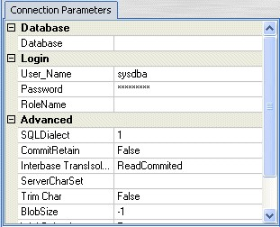
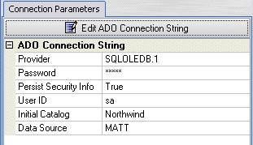

Connection Parameters
The Connection Parameters section differs according to the Drivers chosen.

Db Express Connection Parameters section has 3 sections:
- Database: Specify here the Name and/or the Location of the Database
- Login: The user Name, Password etc
- Advanced Parameters
Depending on the Type of Database, these sections have some variations as described below:
Database Section
- For Interbase enter the full path to the database file (*.gdb) in the form Server:Drive:\Path\File Name where
Server is the Network Name or IP Address of the Interbase Server.
Drive is the local drive on the Server where the database is.
\Path\File Name is the full path to the Interbase Database File on the Drive.
- For Oracle and DB2 enter the name database to connect to.
- MSSQL, MySQL and Informix databases require 2 parameters:
The Host name is the name (or IP Address) of the Server that runs the Database.
The Database is the name of the Database to connect to.
Login Section
- If the User Name and Password are filled, DbSee will connect to the Database without showing the Login Dialog. This is not recommended for databases that contain sensitive information. Consult the Security Policy of your Organization if in doubt.
- For some Databases, there is an optional parameter named OS Authentication. If this is set to True then your MS Windows Login is used for the Database Login also - i.e the User name and password are not used. Consult your System Administrator if this would work and can be used.
- Additional optional parameter Role Name is used for Interbase connections. This may be left as blank or filled - consult your Database Administrator.
Advanced Section
This section contains several optional parameters. Usually the default values should be satisfactory. But if you have problems (with connecting or performance) consult your Database Administrator to suitably change these parameters.
ADO (OLEDB) Connection Parameters section displays the parameters (also known as ADO Connection String) as read-only list. To edit click the Edit ADO Connection String button, which displays the MS Windows Dialog titled Data Link Properties.
- Complete the data on the Connection page of this dialog.
- Click the Test Connection button to test the connectivity.
- If required you may set additional properties under the Advanced or All tabs
The parameters shown in this dialog vary according to the OLEDB Provider chosen. If face any difficulty take the help of your System or Database Administrator.
Created with the Freeware Edition of HelpNDoc: Free PDF documentation generator